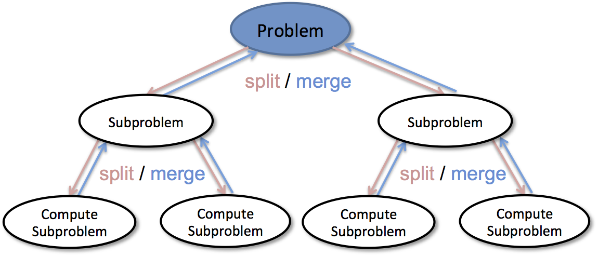

Sort¶
Quick Sort¶
引例：荷兰国旗问题🇳🇱¶
Heap Sort¶
https://docs.python.org/3/library/heapq.html#heapq.heapify
时间复杂度O(N*logN)，额外空间复杂度O(1)。
堆结构非常重要
- 堆结构的
heapInsert和heapify - 堆结构的增大和减少
- 如果只是建堆的过程，时间复杂度为O(N)
- 优先级队列结构，就是堆结构
Heap¶
堆的定义¶
堆结构就是一个完全二叉树，数组的结构实现，通过约定下标规则。
对于任意下标为i的结点，
- 左孩子：
2*i + 1 - 右孩子：
2*i + 2 - 父节点：
(i-1) // 2
大根堆：在一棵完全二叉树中，任何一棵子树的最大值都是这棵子树的根，所形成的结构叫大根堆。小根堆类似。
堆的特点与优势¶
- 大/小根堆有一个很重要的属性：它的最大/小元素始终是根节点
heap[0]。 - 堆的调整代价只和
层数有关，所以入堆和出堆的代价只有O(lgN)。
大根堆的实现¶
This implementation uses arrays for which heap[i] > heap[2*i+1] and heap[i] > heap[2*i+2] for all i, counting elements from zero.
给定数组，都可根据约定视其为堆，但其不是大根堆，如何将数组调整为大根堆？
建立大根堆¶
heapInsert: 经历一个新结点加入一个已经调整好的堆中，同时往上调整的过程。调整停止条件：当加入结点值不大于其父节点时，
调整停止。
堆在数组上可伸缩
def insertHeap(arr, index):
par_i = (index - 1) // 2
while par_i >= 0 and arr[index] > arr[par_i]: # 插入结点值比父结点大时，往上调整
arr[index], arr[par_i] = arr[par_i], arr[index] # 与父结点交换
index = par_i # 插入结点来到父节点的位置
par_i = (index - 1) // 2
def createHeap(arr):
if arr == None or len(arr) < 2:
return arr
for i in range(len(arr)): # 依次将结点加入堆中， 最终将数组（堆）调整为大根堆
insertHeap(arr, i)
return arr
时间复杂度分析：O(N)
当第i个结点加入堆中时，0~i-1已经调整为大根堆，其高度为O(log(i-1))，即调整代价为O(log(i-1))。(沿其父结点依次向上>
比较调整)
所以, N个结点的调整代价为：O(lg1) + O(lg2) + ... + O(lgN)收敛于O(N)
堆化¶
def heapify(arr, index, heapSize):
left = 2 * index + 1
# 左孩子未越界，在堆上，继续循环判断是否下沉
while left < heapSize:
# 1. 求左右孩子最大的下标
largest = left + 1 if (left+1) < heapSize and arr[left+1] > arr[left] else left
# 2. 最大孩子和本结点最大的下标
largest = index if arr[index] >= arr[largest] else largest
# 3. 如果最大的结点就是自身，heapify完成跳出
if largest == index:
break
# 4. 否则，交换下沉
arr[largest], arr[index] = arr[index], arr[largest]
index = largest
left = 2 * index + 1
堆排序¶
堆大小：heapSize = len(arr)
数组最后一个数下标：heapSize -= 1
- 把数组
arr创建为大根堆 - 堆顶
arr[0]与数组最后一个数arr[heapSize]交换 - 将堆的大小缩小
heapSize -= 1 0~heapSize做heapify- 至
2循环，直到堆大小减到0，数组有序
def heapSort(arr):
createHeap(arr)
heapSize = len(arr)
while heapSize > 1:
heapSize -= 1
arr[0], arr[heapSize] = arr[heapSize], arr[0]
heapify(arr, 0, heapSize)
BFS & DFS¶
BFS¶
def bfs(graph, start, end):
queue = []
queue.append([start])
visted.add(start)
while queue:
node = queue.pop()
# 标记已被访问
visted.add(node)
process(node)
# 1. 寻找后继结点 2. 检查后继结点是否被访问
nodes = generate_related_nodes(node)
queue.push(nodes)
# other process work
....
DFS¶
# Recursion
visted = set()
def dfs(node, visted):
visted.add(node)
# process current node here
...
for next_node in node.children():
if next_node not in visted:
dfs(next_node, visted)
# Non-Recursion
def dfs(tree):
if not tree.root:
return None
visted, stack = [], [tree.root]
while stack:
node = stack.pop()
visted.add(node)
process(node)
nodes = generate_related_node(node)
stack.push(nodes)
# other processing work
...
Recursion¶
用相同的方法解决规模不同的相同问题。 相同的方法：函数 问题的规模： 函数参数控制 递归是一种特殊的循环，通过函数体循环。
factorial(6):
6 * factorial(5)
6 * (5 * factorial(4))
6 * (5 * (4 * factorial(3)))
6 * (5 * (4 * (3 * factorial(2))))
6 * (5 * (4 * (3 * ( 2 * factorial(1)))))
6 * (5 * (4 * (3 * ( 2 * 1))))
6 * (5 * (4 * (3 * 2)))
6 * (5 * (4 * 6))
6 * (5 * 24)
6 * 120
720
- 把问题转化为规模缩小了的同类子问题
- 有明确的不需要继续进行递归的条件（base case）
Template¶
def recursion(level, param1, param2, ...):
# recursion terminator
if level > MAX_LEVEL:
print_result
return
# process logic in current level
process_data(level, data...)
# drill down
self.recursion(level + 1, p1, p2, ...)
# reverse the current level status if needed
reverse_state(level)
Example:¶
Divide and Conquer¶
递归的高阶算法应用：分治

Template¶
def divide_conquer(problem, param1, param2, ...):
# recursion terminator
if problem is None:
print_result
return
# prepare data
data = prepare_data(problem)
subproblem = split_problem(problem, data)
# conquer subproblem
subresult1 = self.divide_conquer(problem[0], p1, p2, ...)
subresult2 = self.divide_conquer(problem[1], p1, p2, ...)
subresult3 = self.divide_conquer(problem[2], p1, p2, ...)
...
# process and generate the final result
result = process_result(subresult1, subresult2, subresult3, ...)
Example:¶
Dynamic Programming¶
所有的动态规划都是由暴力递归优化而来 动态规划是一种分阶段求解决策问题的数学思想。 三个重要的概念： 状态（最优子结构）、递推方程、边界。 动态规划利用自底向上的递推方式，实现时间和空间上的最优化。
- 递归展开过程中存在重复状态，即重叠子问题
- 重复状态无后效性：与到达这个状态的路径无关，即只要这个状态参数确定，则返回值确定。
暴力递归到动态规划的解法： 1. 找出需要求解的状态位置 2. 回到Base case中设置不被依赖的边界状态 3. 分析普遍状态如何依赖
Example:¶
-
One-dimensional DP 70. Climbing Stairs
-
Two-dimensional DP 64. Minimum Path Sum 120. Triangle
更新中...